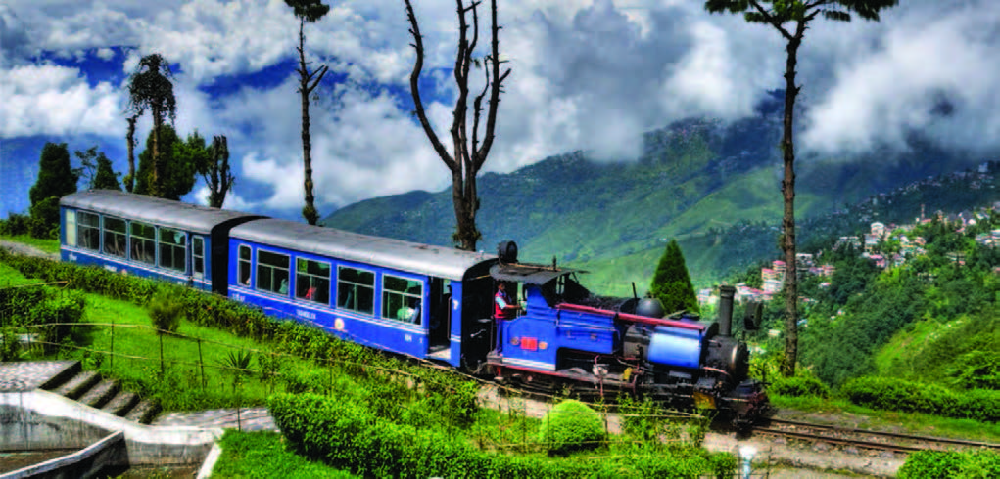

কিভাবে যাবেন?
প্রাকৃতিক সৌন্দর্যে বিভোর নগরী পাহাড়ে ঘেরা অপূর্ব চিরহরিৎ ভূমির দার্জিলিংয়ে স্থলপথে রাজধানী ঢাকা থেকে সরাসরি দার্জিলিং যেতে চাইলে উত্তরবঙ্গের বুড়িমারি সীমান্ত অতিক্রম করে যাওয়াটাই সবচেয়ে সুবিধাজনক। ঢাকার গাবতলী থেকে প্রতিদিন অসংখ্য যাত্রীবাহী বাস চলাচল করে উত্তরবঙ্গের বুড়িমারী সীমান্তের উদ্দেশে। ঢাকার ভারতীয় দূতাবাস থেকে পাসপোর্টে নির্দিষ্ট সময়ের ভিসা নিয়ে রাত ১০টার সুপার সেলুন চেয়ার কোচে উঠে পড়–ন বুড়িমারী সীমান্তের উদ্দেশে। ভাড়া জনপ্রতি আর কত সামর্থের মধ্যেই। ভোর ৭টা নাগাদ আপনি অনায়াসে পৌঁছে যাবেন বুড়িমারী চেকপোস্টে। ইমিগ্রেশন অফিসের কাছেই সব বাস থামে। প্রাতঃরাশ সম্পন্ন করে ইমিগ্রেশনের দায়িত্বে নিয়োজিত ব্যক্তির সঙ্গে সম্পন্ন করে নিন ভ্রমণ কর ও কাস্টমসের সব প্রক্রিয়া। অবশ্য আপনি চাইলে ঢাকা থেকেই ভ্রমণ কর প্রদান করে যেতে পারেন সোনালী ব্যাংকের যে কোন শাখায়। বুড়িমারী অতিক্রম করে ওপারে চ্যাংড়াবান্দা সীমান্তে পৌঁছে একইভাবে সম্পন্ন করে নিন আপনার ইমিগ্রেশন ও কাস্টমসের সব প্রক্রিয়া। ও ভালো কথা, আপনার বহনকৃত ইউএস ডলার চ্যাংড়াবান্দায় অবস্থিত সরকার অনুমোদিত ডিলারদের কাছ থেকেই ভারতীয় মুদ্রায় পরিবর্তন করে নেবেন। অন্যথায় পরবর্তী সময়ে টাকা ভাঙাতে আপনাকে বেশ বেগ পেতে হবে।চ্যাংড়াবান্দা থেকে সরাসরি ময়নাগুড়ির বাস ধরে দেড় ঘণ্টায় পৌঁছে যাবেন শীর্ষেন্দু-সমরেশের উপন্যাসখ্যাত শিলিগুড়ি জিপ স্টেশনে। ভাড়া জনপ্রতি ৭০ ভারতীয় রুপি। সেখান থেকে ঝটপট ১২০ ভারতীয় রুপির বিনিময়ে সংগ্রহ করে নিন দার্জিলিংগামী কমান্ডার জিপের টিকিট। হাতে শীতের পোশাক নিয়ে বসে পড়–ন আপনার নির্ধারিত আসনে। ব্যস, মাত্র আড়াই ঘণ্টায় আপনি পৌঁছে যাবেন মেঘের দেশ স্বপ্নিল ভুবনের দার্জিলিংয়ে।
তাছাড়া কলকাতা থেকে যেতে চাইলে আপনাকে শিয়ালদহ রেলওয়ে স্টেশন থেকে সন্ধ্যা ৭টা ১৫ মিনিটের দার্জিলিং মেল ধরতে হবে। টিকিট সংগ্রহ করবেন ট্যুরিস্টদের জন্য নির্ধারিত কাউন্টার ফেয়ারলি প্যালেস থেকে। অতঃপর প্রায় ৫৭৬ কিলোমিটার অর্থাৎ ১৪ ঘণ্টার এক ট্রেন ভ্রমণ করে পরদিন সকাল ১০টা নাগাদ নিউ জলপাইগুড়ি স্টেশনে পৌঁছে যাবেন। স্টেশন থেকে প্রাতঃরাশ সম্পন্ন করে রিকশাযোগে চলে আসুন শিলিগুড়ি জিপ স্টেশনে। ১০-১২ রুপি ভাড়া পড়বে। সেখান থেকে ওই কমান্ডার জিপে চড়ে পৌঁছে যেতে পারেন স্বপ্নপুরী দার্জিলিংয়ে।
কোথায় থাকবেন?
পুঞ্জীভূত মেঘের কণা ভেদ করে আঁকাবাঁকা পথের ধারে পুরো দার্জিলিং শহরে রয়েছে অসংখ্য আবাসিক হোটেল। এর মধ্যে উল্লেখযোগ্য হোটেলে প্রতিদিনের থাকা এবং খাওয়াসহ জনপ্রতি ভাড়া প্রায় ৮৫০-১২০০ রুপি করে। প্রায় প্রতিটি হোটেলেই রয়েছে দর্শনীয় স্থানসমূহ ঘুরে বেড়ানোর জন্য আকর্ষণীয় জিপ, সার্বক্ষণিক গরম পানির ব্যবস্থা, ঠাণ্ডা প্রতিরোধে ওষুধসহ যে কোন মুহূর্তে যে কোন সমস্যার তাৎক্ষণিক সেবা।খাবার-দাবার
ট্যুরিস্টদের জন্য হোটেলগুলোতে সব ধরনের খাবারের ব্যবস্থা করা হয়। ফলে পুষ্টিকর ও রুচিসম্মত খাবার নিয়ে দুশ্চিন্তার কিছু নেই। বাংলাদেশ থেকে প্রতিবছর অসংখ্য ট্যুরিস্টের আগমনের ফলে এখানকার হোটেল মালিকরা বাংলাদেশীদের জন্য বিশেষ ব্যবস্থায় একেবারে বাঙালি রুচিসম্মত খাবার-দাবারের জোগান দিয়ে থাকেন। ব্রেকফাস্ট, লাঞ্চ এবং ডিনার ছাড়াও হোটেল কর্তৃপক্ষ ভোরবেলায় বেড-টি এবং ডিনারের আগে ইভনিং-টি’র ব্যবস্থাও করে থাকেন।কোথায় বেড়াবেন?
ছোট বড় মিলিয়ে বেড়ানোর জন্য প্রায় ১৭টি আকর্ষণীয় স্থান রয়েছে দার্জিলিং জুড়ে। পৃথিবীর সবচেয়ে উঁচুতে অবস্থিত রেলওয়ে স্টেশন ‘ঘুম’ ছাড়াও আরও যেসব দর্শনীয় স্থান দেখে আপনার আনন্দময় অভিজ্ঞতা অর্জিত হবে তা হচ্ছে; সমুদ্র-পৃষ্ঠ থেকে প্রায় ১০,০০০ ফুট উঁচু পাহাড়ের চূড়া থেকে অপূর্ব সুন্দর সূর্যোদয় দেখা। পৃথিবীর বিখ্যাত প্রার্থনা-স্থান ঘুম মোনাস্ট্রি। ছবির মতো অপূর্ব সুন্দর স্মৃতিসৌধ বাতাসিয়া লুপ বিলুপ্ত-প্রায় পাহাড়ি বাঘ Snow Lupard খ্যাত দার্জিলিং চিড়িয়াখানা। পাহাড়ে অভিযান শিক্ষাকেন্দ্র ‘হিমালয়ান মাউন্টেনিয়ারিং ইন্সটিটিউট’। সর্বপ্রথম এভারেস্ট বিজয়ী তেনজিং-রক- এর স্মৃতিস্তম্ভ। কেবল কারে করে প্রায় ১৬ কিলোমিটার এক পাহাড় থেকে অন্য পাহাড়ে ভ্রমণ।হ্যাপি ভ্যালি টি গার্ডেনে বসে তাৎক্ষণিকভাবে পৃথিবীখ্যাত ব্ল্যাক টি পানের অপূর্ব অভিজ্ঞতা। যুদ্ধবিধ্বস্ত শরণার্থী কেন্দ্র তিব্বতিয়ান সেলফ হেলপ্ সেন্টার। সমুদ্র-পৃষ্ঠ থেকে প্রায় ৮,০০০ ফুট উঁচুতে অবস্থিত মনোরম খেলাধুলার স্থান দার্জিলিং গোরখা স্টেডিয়াম।
নেপালি জাতির স্বাক্ষর বহনকারী দার্জিলিং মিউজিয়াম। পৃথিবীর বিখ্যাত বৌদ্ধ বিহার জাপানিজ টেম্পল ব্রিটিশ আমলের সরকারি নিয়ন্ত্রণ কেন্দ্র কাউন্সিল হাউস ‘লাল কুঠির’ অসাধারণ শৈল্পিক নিদর্শন খ্যাত ‘আভা আর্ট গ্যালারি’। শতবর্ষের প্রাচীন মন্দির ‘দিরদাহাম টেম্পল’। এসব নিদর্শন ছাড়াও আপনার মনের চিরহরিৎ জগতকে শুধু আনন্দময় নয়, এক নতুন জীবনের যাত্রা শুরু করাতে চলে যেতে পারেন পাথর কেটে তৈরি ‘রক গার্ডেন’ এবং গঙ্গামায়া পার্কে উপরোল্লিখিত দর্শনীয় স্থানগুলো ছাড়াও আপনার হদয় গহিন থেকে রোমাঞ্চিত করবে মহান সৃষ্টিকর্তার বিশাল উপহার হিমালয় কন্যা ‘কাঞ্চন-জংঘা’, বিশুদ্ধ পানির অবিরাম ঝর্ণাধারা ‘ভিক্টোরিয়া ফলস্’ এবং মেঘের দেশে বসবাসরত এক সুসভ্য জাতির সংস্কৃতি।